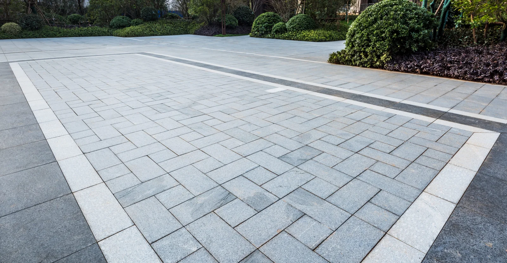

Installation, réparation et entretien de pavé-uni. Paysagement, tonte et nettoyage à pression — des résultats durables, une qualité irréprochable.
De la pose de pavé-uni à l'entretien de votre terrain, nous couvrons tous vos besoins extérieurs.
Installation, nivellement, remplacement et entretien de pavé-uni. Allées, trottoirs, marches japonaises et patios — notre spécialité.
Découvrir 01Pose de tourbe, plates-bandes, excavation, ensemencement et nettoyage. Nous donnons vie à vos projets extérieurs sur mesure.
Découvrir 02Coupe de la pelouse, taille des bordures et nettoyage complet du terrain. Un service rapide, soigné et fiable.
Découvrir 03Restauration du sable polymère, nettoyage en profondeur des joints de pavé, terrasses, murs et surfaces extérieures.
Découvrir 04Spécialistes en rénovation et entretien extérieur, nous transformons vos espaces avec soin et expertise. Que vous soyez un particulier ou une entreprise, notre équipe s'adapte à vos besoins pour des résultats durables.

Prêt à transformer votre espace ? Notre équipe est disponible pour répondre à toutes vos questions.
438-988-1574
maintenance.adjoka@gmail.com
Lun–Ven : 8h–18h | Sam : 9h–17h
Appelez-nous ou envoyez-nous un message pour obtenir une soumission gratuite et sans engagement. Nous répondons rapidement.
Appeler maintenant